Recorrido virtual 360°
Toca un punto para ir a él. El cono muestra hacia dónde miras.

Este recorrido necesita WebGL y debe abrirse desde un servidor web (no con doble clic sobre el archivo). Revisa LEEME.txt.